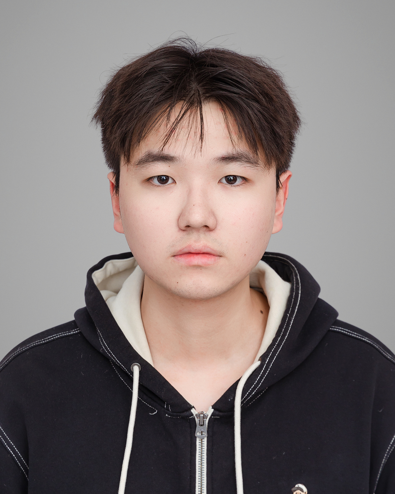

|
 |
Undergraduate Student in Mathematics |
I am currently a final-year B.Sc. student in Mathematics at the University of Auckland, as part of a joint program with Northeastern University. My current research focuses on multimodal large language models (MLLMs), particularly diffusion MLLMs. Previously, I worked on computer vision problems. I am actively seeking PhD/MPhil/RA opportunities for Fall 2027 or Spring 2028.
MLLMs/Diffusion MLLMs: Interpretability, Reasoning, Visual Grounding, Hallucination Mitigation.
Computer Vision and Pattern Recognition: Image Restoration, Object Detection and Tracking.
[07.2026] Commenced my final year of study at the University of Auckland.
[06.2026] Received the University of Auckland International Student Excellence Scholarship.
[03.2026] One paper was accepted to ICME 2026 as a Spotlight paper.
[07.2025] One paper was accepted to ITSC 2025.
[04.2025] One paper was accepted to Scientific Reports 2025.
Look Before You Denoise: Understanding and Calibrating Visual Attention Sinks for Reliable Reasoning in dMLLMs
H. Zhao, Z. Qiu, Y. Fu, X. Luo, and X. Zhang
Submitted to Proceedings of the AAAI Conference on Artificial Intelligence (AAAI), 2027, under review.
Decoupling Amplitude and Phase Attention in Frequency Domain for RGB-Event Based Visual Object Tracking
S. Wang, X. Wang, H. Zhao, J. Xu, B. Jiang, L. Zhu, X. Zhao, Y. Tian, and J. Tang
Submitted to IEEE Transactions on Circuits and Systems for Video Technology (TCSVT), 2026, under review.
[📄]
[]
Learning Where to Attend: A Sparse Dynamic Gate Transformer for Efficient Image Deraining
H. Zhao, W. Pan, R. Xie, Z. Qiu, Y. Ma, and R. Luo
IEEE International Conference on Multimedia and Expo (ICME), 2026, Spotlight.
[📄]
[]
GMDNet: A Graph-Dynamics-Aware Multi-Scale Decoupling Network for Spatio-Temporal Traffic Flow Prediction
Y. Song, Y. Ma, Z. Chu, H. Zhao, R. Luo, and R. Su
IEEE International Conference on Intelligent Transportation Systems (ITSC), 2025.
[📄]
Multi-strategy Improved Gazelle Optimization Algorithm for Numerical Optimization and UAV Path Planning
L. Li, H. Zhao, L. Lyu, and F. Yang
Scientific Reports, 2025.
[📄]
Programming Languages: Python, C/C++, R, MATLAB.
Development & Research Tools: Git, Linux, LaTeX, Codex.
ML & Data Analysis: PyTorch, Transformers, scikit-learn, Time Series Analysis, PCA.
Languages: Mandarin (Native), English (Fluent).